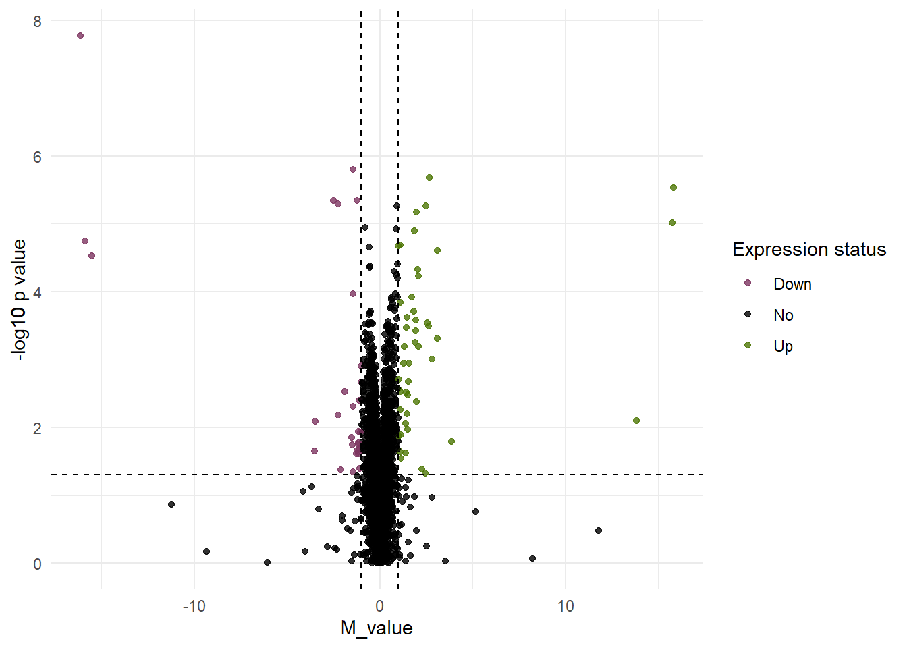
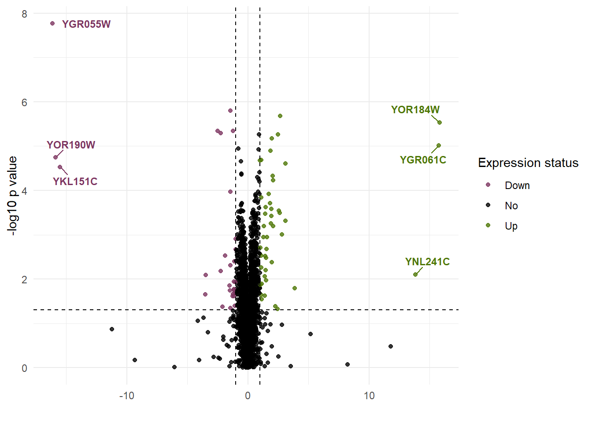

install.packages("tidyverse")
library(tidyverse)
install.packages("ggplot2")
library(ggplot2)
install.packages("dplyr")
library(dplyr)
install.packages("ggrepel")
library(ggrepel)
install.packages("patchwork")
library(patchwork)
install.packages("gridExtra")
library(gridExtra)
install.packages("grid")
library(grid)
install.packages("scales")
library(scales)Volcano Plots
Chapter Overview
Volcano plots are ways of relating one variable’s expression to another. In the case of bioinformatics, this tends to be the binary logarithm of the intensity ratio between two values on a graph. In our case, we will be plotting data from a yeast data set using conditions of limited nitrogen and limited sulfur. For our data set, there are also two calculations of the p_value or measure of significance of the data. As such, we will further divide our graphing into the the log10 of these p_value calculations. The first step to undergo before creating a volcano plot is to install the packages.
Packages
For this type of graph, we will be using some of the same packages as previous chapters. All libraries are shown in the code window below
Labeling Your Data
Before we begin creating volcano plots, it is important to ensure that we label our data to determine what values are significant and which values are not significant. To do this, we will use the mutate() function to add a new column to our dataset with the labels. The code window below shows how this is done.
BSQN_LN_SD__volcano <- df_volcano_filtered %>%
mutate(diffexpressed = case_when(
LN_SD_M_values > 1 & BSQN_p_values_LN < 0.05 ~ "Up",
LN_SD_M_values < -1 & BSQN_p_values_LN < 0.05 ~ "Down",
TRUE ~ "No"
))Breaking down this code, we are taking a data set and adding a new column called diffexpressed. In that column, we are specifying that in the cases when the M values are greater than 1 and the p values are less than 0.05 (for significance) the value should be labeled “Up”. This is to simply provide a label for upregulated data points in this condition, as compared to the control condition that are statistically significant. We also provide a specification for the opposite effect and label it “Down” to signify downregulation of a gene between the control condition and this condition. The last line states that if there is data that does not fit these two criteria lines, it should be labeled “No” for no difference. This will be useful for specifying points in the volcano plot to be colored differently to visually represent the upregulated genes.
Creating a Volcano Plot
Now we will use the ggplot2 package functionality to create a volcano plot. To do this, we will use the aes() argument in the ggplot() function to orient our two sets of values. Following this, we will use the functions for geom_hline() and geom_vline() to create a visual guide to areas where data would be significant. The code example below shows all function used to create the violin plot
BSQN_LN <-ggplot(BSQN_LN_SD_volcano, aes(x=LN_SD_M_values, y = -log10(BSQN_p_values_LN), color = diffexpressed))+
geom_point(alpha = 0.8, size = 1.5)+
geom_hline(yintercept = -log10(0.05), linetype= "dashed", color = "black", linewidth = 0.5)+
geom_vline(xintercept = c(-1, 1), linetype = "dashed", color = "black", linewidth = 0.5)+
scale_color_manual(values = c("Down" = "#7D3560", "No" = "black", "Up" = "#4E7705" ))+
labs(x = "M_value",
y = "-log10 p value",
color = "Expression status")+
theme_minimal()+
theme(legend.position = "right")In the code window above, we specified the M values on the x axis, the -log10 of the p values on the y axis, and color to be related to the diffexpressed column values. After that, the geom_hline() function creates a dashed line as a distinction for significance at the -log 10 of 0.05. The geom_vline() functoin creates vertical dashed lines at -1 and 1 to represent where differences between the condition and the control condition in terms of expression. The scale_color_manual() function creates a custom scale that uses the expression status column created before to color up- and down-regulated expression of genes. The visual of this is shown below:

Combined Graphs w/ Legends
Sometimes, when there are multiple conditions, we might want to arrange graphs together to be able to examine multiple conditions. One way that we can do this is to use grid.arrange() to combine multiple objects of violin plots. In this case, we will be combining these graphs by conditions in the columns and by analysis type in the rows.An example of this is shown below:
grid.arrange(
BSQN_LN, BSQN_LS, Cellhts2_LN, Cellhts2_LS,
ncol = 2,
top = textGrob("Limited Nitrogen Limited Sulfur",
gp = gpar(fontsize = 14, fontface = "bold")),
left = textGrob("Cellhts2 BSQN",
rot = 90, gp = gpar(fontsize = 14, fontface = "bold"))
)
For the grid.arrange() function, the graphed objects are arranged from left to right in order of how we want the graphs to be shown. If we specify in ncol = that we want 2 columns, the first two objects will be arranged in left to right, then the last two objects will fill in a second row. The arguments afterward of left and top are labels added to the sides of the arranged graphs.
The arranged graphs all have individual legends and provide unnecessary clutter on the screen. We can use a different method graphing the combined plots to remove some of the unnecessary clutter.
Combined Graphs w/ Unified Legend
Row Labels
In this case, we are going to use aspects of the patchwork package to combine multiple plots and create a cleaner graph. Before we combine the graph, we first need to specify our row and column labels. To do so, we will create a new object under ggplot that contains an annotation. This will be used later to provide a title for our rows or columns. An example of a row label is shown below:
row1_label <- ggplot() + annotate("text", x=0, y=0, label = "BSQN", fontface = 2, angle = 90, size = 5)+
theme_void()After creating our row label, we need to create an object with a spacer so that we can display our row names and not interfere with our plots. To do this, we will create a new object called left-col to seperate row names from graphs. An example is shown below:
left_col <- plot_spacer() / row1_label / row2_label + plot_layout(heights = c(0.1, 1, 1))This line of code specifies an empty cell followed by two row labels. Afterwards, the layouts of the spacer and labels were changed so that the empty space had a smaller height and the row labels displayed at their full length.
Column Labels
Now that we have created the row labels and spacers, we need to create the labels for columns. While creating the labels for our columns, we can also add the graphs we made previously to the new object. An example of this is shown below:
col_nitrogen <- (ggplot() + annotate("text", x = 0, y = 0, label = "Limited Nitrogen", fontface = 2, size = 5)+ theme_void())/
BSQN_LN/
Cellhts2_LN+
plot_layout(heights = c(0.1, 1, 1))This line of code creates a similar text annotation for the column name as the row names previously,and places the text over the BSQN_LN plot object.Then, the Cellhts2_LN object was placed under the annotation and other plot. Once again, the plot_layout() lines perform a similar action as in the row annotation.
Combining
Finally, we need to combine our plots, and the annotation column together. We will use a similar strategy as the previous two objects. This time, we will combine the left_col object, col_nitrogen object, and col_sulfur obejct in a “side-by-side” manner. Then, we will add an argument caled guides to collect the legend. Finally, we will specify the total legend position.An example is shown below:
final_plot <- (left_col | col_nitrogen | col_sulfur) +
plot_layout(widths = c(0.1, 1, 1), guides = 'collect') &
theme(legend.position = "top")A reason why we may choose to use this configuration for creating a combined graph, is that it provides more customization for both annotations to the graphs, and how we choose to combine our graphs. It also provides an opportunity to collect the legends of all graphs and relocate them as one combined legend to a different area of the graph window in R. An example of the result is shown below:

Labeling
When examining statistically significant values in the volcano plots, outliers are clearly visible. To understand if these outlier data sets are consistent throughout testing, we could label these values. We will do this in a similar way to that of the labels for Scatter plots, and use geom_text_repel() function. Below is an example line of code that you could add to the rest of your volcano pliot code to create these outlier labels:
geom_text_repel(
data = subset(BSQN_LN_SD__volcano, (LN_SD_M_values >10 | LN_SD_M_values <-10)&
(-log10(BSQN_p_values_LN) > -log10(0.05))),
aes(label = ORF),
size =3,
fontace = "bold",
max.overlaps = Inf,
box.padding = 0.5,
show.legend = FALSE
)Breaking down the code line above, we are plotting a peice of text, using the data table BSQN_LN_SD_volcano. From there, we are subdividing the data into M values of greater than 10 and less than -10, with a -log10 p value greater than the -log10 p value of 0.05. From there, we make the label for this text using the column ORF, in the data set. For the data set we are using here, the ORF column is the one that contains the gene names/IDs being tested. From there, we specify the font size and style. The last 3 lines create rules for how many labels can be on screen (Inf means infinite), spacing between labels to prevent overlap on screen (0.5 in this case), and should there be an extra legend shown (we turn this to FALSE to prevent visual clutter on the graph). A complete volcano plot with this extra line of code included is shown below:

Combined w/ Labels
Now that we created these legends in the volcano plots, we can combine the graphs together again and compare outlier values across conditions and/or normalization methods. For normalization methods, there may be less variance of outliers than across conditions, but it can be useful for determining erroneous data, or strong reacting genes to conditions. Below is a combined plot using these labeled volcano graphs:

Logarithmic Scale
In the earlier chapter of Scatter plots, we discussed how to create a log10 break for the x and y axes. The log10 break for the y axis is still applicable in this situation, but not for the x axis. In the case of volcano plots, we will need to create a new type of log2 scale for the x axis. Below is an example of how we can do that:
log2_minor_breaks <- function(limits){
max_log <- max(abs(limits), na.rm = TRUE)
if (max_log == 0) return(0)
powers <- 0:ceiling(max_log)
minor_log_values <- unlist(lapply(powers, function(p) {
low <- 2^p
high <- 2^(p + 1)
log2(seq(low, high, length.out = 5))
}))
all_breaks <- unique(c(-minor_log_values, 0, minor_log_values))
all_breaks[all_breaks >= limits[1] & all_breaks <= limits[2]]
}Breaking down this section of code, we are creating a new function that gathers that gathers a minimum and maximum value of the table. While this function is running, it is also removing any NA data points. Then, it is creating a new object called powers where the value ranges from 0 to the maximum value of the data. Next, it creates a minor_log object to gather the lowest value on the powers list and the highest value on the powers list. Then, it subdivides that distance into 5 chuncks. The second to last line takes all the minor_log values and creates a range from positive minor_log to -minor_log. Finally, the last line tells the function to only apply to the start and end of the axis instead of the infinitie range.
When inserting your new log10 and log2 functions into your volcano plot, make sure to specify which axis and that it is continuous. In this case, I will be showing an example of the log2 function being applied to the x-axis. The following example is showing how to specify a range, major break values, and to create minor breaks using the log2 function created earlier.
scale_x_continuous(
limits = c(-17, 17),
breaks = seq(-16, 16, by = 2),
minor_breaks = log2_minor_breaks)Now that we know how to add the log10 and log2 breaks to our graphs, we can create the combined graphs again and add our new minor breaks to them. An example is shown below: